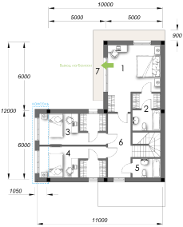

8 777 707 70 07
8 777 707 70 07
8 777 707 70 07
8 777 707 70 07


Преимущества
Мы стремимся дать Вам комфорт и покой
Miras Hills окружен холмами, он удален от суеты и шума города ровно настолько, сколько нужно для идеальной тишины и чистоты
Мы за безопасность
Городок огорожен, действует пропускная система и круглосуточно работает видеонаблюдение.
Miras Hills - это жизнь
Всего в 5 минутах от Вашего коттеджа самые прекрасные места нашего города - Парк Первого Президента, Санаторий «Almaty Resort», Фитнес гольф-клуб «Жайляу», а также в этом районе ТРЦ «MEGA Alma-Ata», сеть супермаркетов «Magnum Cash & Carry», детские сады, школы, магазины и многое другое.
ЛОКАЦИЯ
Коттеджная вилла «Miras Hills» расположена среди холмов в экологически чистом
районе города. Растущая популярность этого района объясняется не только
экологическими условиями, но и уникальной красотой пейзажей. Завораживающие
виды, обилие ярких натуральных красок, свежий воздух - все это создает ощущение
настоящей сказки.
Одна из особенностей «Miras Hills», подарившая ему это прекрасное название –
прекрасные холмы естественного происхождения, обрамляющие виллу и безусловно,
являющиеся одним из любимейших мест отдыха его жителей.

- Miras Hills
- Gymnast KZ
- “Тамирис” детский сад
- Школа “Бобек”
- Жана гасыр гимназия №175
- Школа «Мирас»
- «Асем-ай» мини-маркет
- «My mart» мини-маркет
- Трц «Мега Алматы»
- MDN Clinic
- «Almaty Resort» санаторий
- «MCD» медициский центр дерматологии
- «LURYE CLINIC» центр интегративной медицины
- Private Clinic Almaty
- Жайлау
- Первый Парк Президента
Перезвонить мне
ПЛАНИРОВКИ

Первый этаж

Второй этаж

Терасса

Расположение
Коттеджная вилла «Miras Hills» расположена среди холмов в экологически чистом районе города. Растущая популярность этого района объясняется не только экологическими условиями, но и уникальной красотой пейзажей. Завораживающие виды, обилие ярких натуральных красок, свежий воздух - все это создает ощущение настоящей сказки. Одна из особенностей «Miras Hills», подарившая ему это прекрасное название – прекрасные холмы естественного происхождения, обрамляющие виллу и безусловно, являющиеся одним из любимейших мест отдыха его жителей.
Природа
«Miras Hills» - это идеальное соотношение великолепия природы и высокого уровня комфорта. Он обладает полноценной развитой инфраструктурой: здесь подведены все необходимые инженерные коммуникации – энергоснабжение, водопровод центральная канализация, магистральное газоснабжение. Периметр виллы обнесен капитальным ограждением, на въезде работает оборудованный контрольно-пропускной пункт, осуществляется круглосуточное патрулирование территории. Для активного отдыха на территории «Miras Hills» предусмотрены спортивные площадки, благоустроенные рекреационные зоны.
Расположение
Особую привлекательность КВ «Miras Hills» придает не только его месторасположение,но и прекрасная транспортная доступность: дорога до центра города вряд ли займет у Вас более получаса. Кроме того, район Мирас активно развивается и с каждым годом становится все популярнее и престижнее.